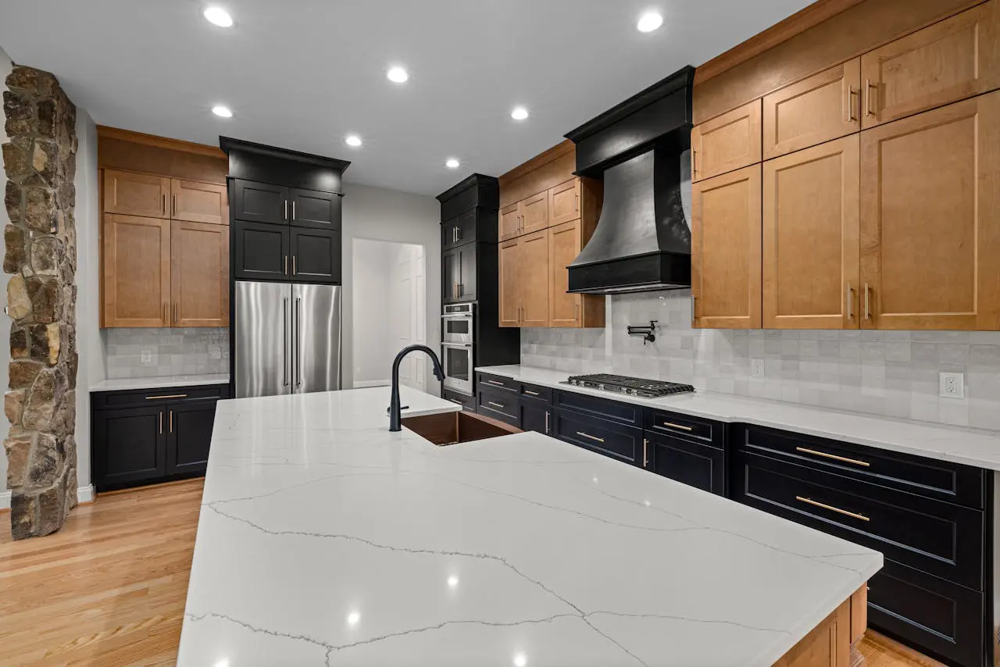
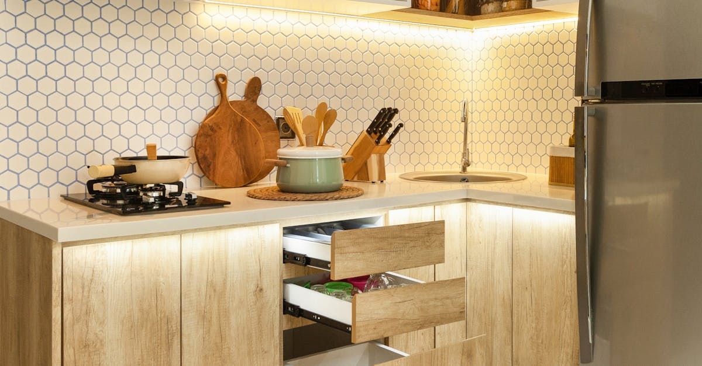
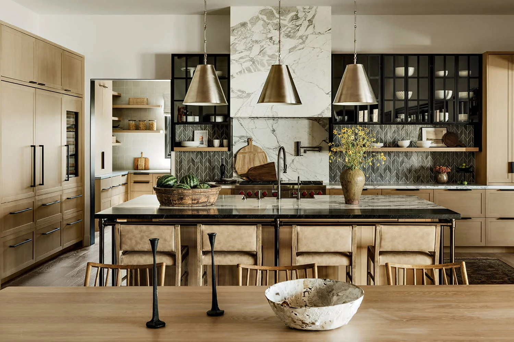
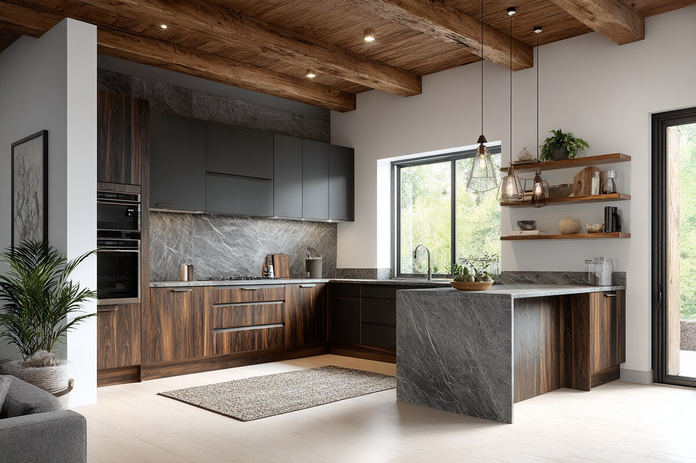

Kitchen Designs
Explore some of our outstanding kitchens, designed with precision and creativity.
Minimalist White Quartz
Featuring high-grade **white quartz countertops** paired with matte white cabinetry for a clean and timeless look. Rated ★★★★☆ by clients for its elegance and ease of cleaning. Customer feedback highlights its brightness and open feel.
Scandinavian Oak
Crafted with **solid oak wood panels** and soft grey accents, this design embraces Scandinavian simplicity. Clients love its natural warmth. Rated ★★★★★ for its homely yet modern vibe.
Rustic Charm
Combines **reclaimed barn wood** and handcrafted tiles for a cozy, lived-in feel. Popular among country-style lovers. Rated ★★★★☆ for its nostalgic appeal and durability.
Urban Slate
Modern industrial style with **slate stone countertops** and brushed steel fixtures. Clients appreciate its sleek, city-inspired vibe. Rated ★★★★☆ for its bold aesthetics and resilience.